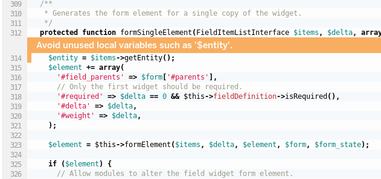
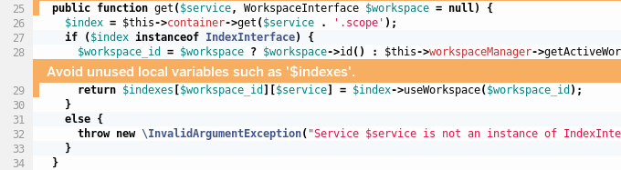
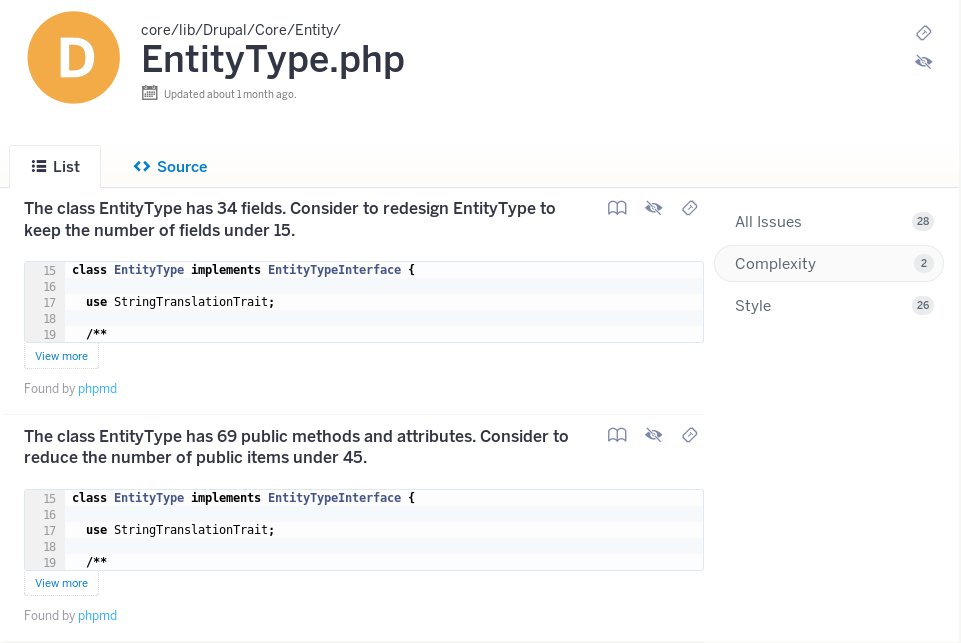

Static Analysis,
Code Climate, and Drupal
DrupalCon New Orleans 2016
By Joseph D. Purcell
@josephdpurcell
Let's talk.
Questions, comments, concerns, objections,
are all welcome!
What is static analysis?
Anything you know without executing code.
Examples:
- Security: globals, var_dump, eval
- Hard to test: statics, complexity
- Hard to refactor/extend: coupling
- Potential bugs: unused vars/props
i.e. code smells...
If it stinks, change it.
- Grandma Beck, "Refactoring"
What is Code Climate?
An open source static analysis platform.
You can use it as a workflow tool.
Find problems before you merge code.
 Source: github.com/18F/micropurchase/pull/524
Source: github.com/18F/micropurchase/pull/524
You can use it as an audit tool.
Evaluate code before using it.
Globals: hard to test, security risk
function wp_ajax_delete_tag() {
$tag_id = (int) $_POST['tag_ID'];
check_ajax_referer( "delete-tag_$tag_id" );
$taxonomy = !empty($_POST['taxonomy']) ? $_POST['taxonomy'] : 'post_tag';
...
Source: codeclimate.com/repos/5730fdf0d132d84858004be5/issues?category=security...
Globals: hard to test, security risk
protected function doLoadMultiple(array $names, $immutable = TRUE) {
...
if (isset($GLOBALS['config'][$name])) {
$this->cache[$cache_key]->setSettingsOverride($GLOBALS['config'][$name]);
...
Source: codeclimate.com/repos/5730f2e8d132d85e94000b46/issues?category=security...
Unused variable: bug risk, obscure
 Source: codeclimate.com/repos...core/lib/Drupal/Core/Field/WidgetBase.phpUnused variable: bug risk, obscure
 Source: codeclimate.com...multiversion/src/Entity/Index/MultiversionIndexFactory.phpUnused variable: bug risk, obscure
function hook_tokens_alter(array &$replacements, array $context, \Drupal\Core\Render\BubbleableMetadata $bubbleable_metadata) {
$options = $context['options'];
if (isset($options['langcode'])) {
$url_options['language'] = \Drupal::languageManager()->getLanguage($options['langcode']);
$langcode = $options['langcode'];
}
else {
$langcode = NULL;
}
if ($context['type'] == 'node' && !empty($context['data']['node'])) {
$node = $context['data']['node'];
if (isset($context['tokens']['title'])) {
$title = $node->field_title->view('default');
$replacements[$context['tokens']['title']] = drupal_render($title);
}
}
}
Source: codeclimate.com/repos...core/lib/Drupal/Core/Utility/token.api.php
Complexity: hard to maintain and extend
 Source: codeclimate.com/repos...core/lib/Drupal/Core/Entity/EntityType.php#complexityIdeas?
- Add Drupal Security Sniffs.
- Core and contrib modules display their GPA on project pages.
- Write a Code Climate engine that has all our static analysis checks.
- Would phpmetrics.org be better for auditing?
Let's talk.
Questions, comments, concerns, objections,
are all welcome!